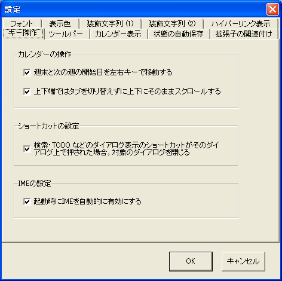

[キー操作] タブでは，カレンダーのキー操作，ショートカットに関する設定が変更できます．
| 名称 | 効果 |
|---|---|
| 週末と次の週の開始日を左右キーで移動する | カーソルキーで日付指定カーソルを移動する場合， 通常は，週の開始日・終了日（カレンダーの左右端）で左右の移動は止まります． この項目にチェックすると，週末で右を押すと翌週の開始日に，週の開始日で左を押すと前週の最終日に， カーソルが移動するようになります． |
| 上下端ではタブを切り替えずに上下にそのままスクロールする | カーソルキーの上下や Page Up/Down キーで月の始めや終わりに到達したとき， 通常は左右の（先月あるいは翌月の）タブに切り替わります． この項目にチェックすると，タブを切り替えず，そのまま先月や翌月の内容をそのタブにスクロール表示します． スクロールして増えた分は一時的なもので， 他のタブに切り替えられたときに破棄されます．カーソル位置は保存されません． |
| 検索・TODOなどのダイアログ表示のショートカットがそのダイアログ上で押された場合， 対象のダイアログを閉じる | 検索やTODOなどの各ダイアログには，それを表示するためのショートカットキーが 割り当てられています．それらのショートカットが，現在表示中のアクティブな ダイアログに対して送られた場合に，そのダイアログを閉じるようになります． ショートカットキーを連続して押すことで， ダイアログの開閉を繰り返すことができます． |
| 起動時にIMEを自動的に有効にする | この項目にチェックすると，hyCalendar 起動時にIMEの状態をON にすることができます． |